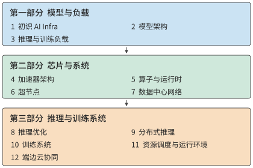

前言
我的上一本著作《深入理解 AI Agent》讨论 Agent 的架构设计与工程实践。在与读者交流、解答问题的过程中，我愈发意识到，要开发好基于模型的应用，还需要理解这类应用赖以运行的基础设施。一方面是模型本身：模型怎样处理输入、生成输出，并根据上下文与环境交互。另一方面是模型的运行系统：参数和上下文状态存在哪里，计算怎样执行，多个加速器怎样协作，以及模型调用怎样与工具程序衔接。本书由此而来，讨论支撑模型训练与推理的基础设施——AI Infra。
要理解应用开发者为什么也需要这些底层知识，可以看一个熟悉的类比。大多数软件工程师不需要亲自开发操作系统、编译器和芯片，但仍然需要学习操作系统、编译原理和计算机体系结构。这些知识帮助我们理解程序所依赖的抽象，以及抽象背后的实现。申请一块内存、读取一个文件、调用一个函数，看起来只是简单的操作，却各有资源与时间代价。理解这些代价，才能解释程序为什么慢，以及怎样改进。基于模型开发应用，同样需要这样的基础。选择多大的模型、保留多长的上下文、允许多少条请求同时执行、把任务放在本地还是云端，都会改变系统需要完成的工作。
编程抽象上移：从操作系统到模型上下文
我在微软亚洲研究院与中科大联合培养读博期间，做的是计算机系统研究，很自然地习惯了从操作系统、编译器和硬件的分工来理解应用。这一领域的两大顶级会议 SOSP（操作系统原理研讨会）和 OSDI（操作系统设计与实现），名字里都包括“OS”，也就是操作系统。传统操作系统需要支撑多种多样的应用，编译器和硬件则为事先未知的程序提供通用能力。以往我们做系统优化时，总要考虑可编程性与性能的权衡取舍，为了极致性能牺牲可编程性往往不是好的选择。
但如今 LLM 就是最重要的应用，在 AI 推理和训练系统中，从算子执行到分布式调度都可以为特定的模型和加速器架构优化，从而为跨层联合优化打开了新的空间。我认为，编程抽象从操作系统到模型上下文的迁移，是计算机系统领域数十年来最重要的变化之一。 从某种意义上说，模型成了 LLM 时代的操作系统，而 AI Infra 成了 LLM 时代的计算机体系结构。《计算机体系结构：量化研究方法》是我在体系结构领域的入门书，而目前 AI Infra 领域还缺少这样一本从硬件约束和模型架构出发，量化推导系统设计的书。这就是我写作本书的动机。
从数量级估算到系统设计
早年做数据中心加速时，无论面对的是模型推理、网络处理，还是存储访问，我都会先做一遍数量级估算：一项任务要完成多少计算，读写多少数据？需要驻留的数据，显存装得下吗？存储和互联带宽能否满足数据供给需求？计算、读写和必须串行执行的步骤，分别给出了怎样的耗时下界？Jeff Dean 所倡导的 back-of-the-envelope estimation，也就是用纸笔做粗略估算，体现的正是这种习惯。几步计算往往就能帮助我们判断一个方向是否值得继续，以及应该先解决哪个问题。
推动我动笔的还有一个更直接的原因。在与 AI Infra 从业者交流时，我发现，不少人熟悉模型和框架，却还没有形成对容量、带宽、算力和延迟的数量级直觉。面对一个设计，能够说出所用的技术，与能够判断它是否可行、性能大致能达到什么水平，是两种不同的能力。我希望这本书能帮助读者建立后一种能力。
在数量级估算上，不仅人容易犯错，AI 也一样。最近，我尝试让 GPT-6 Astra、Claude Fable 5.1 等模型帮忙估算模型推理或训练系统，或者新芯片架构的性能。这些模型能列出公式，算出看似精确的数字，却仍会漏掉决定结果的基本约束：有时只算权重读取，忘了注意力还要读取 KV 缓存；有时估算了读取时间，却没有检查权重、KV 缓存和运行时工作区合计是否放得进显存；有时按峰值算力推算速度，却没有检查存储带宽能否持续供给数据；有时把工作量平均分给多张卡，却遗漏卡间通信；还有时算出了很高的吞吐量，却没有考虑串行依赖与通信往返的延迟。漏掉这些约束中的任何一项，结论都可能偏离几倍甚至几个数量级。
因此，我希望贯穿本书的方法是：从约束推导设计。 先明确任务与质量要求，再列出计算、存储、通信和依赖关系，检查显存等存储资源的容量是否足够、存储和互联带宽是否满足计算的数据需求、哪些依赖造成的等待无法消除，然后讨论模型怎样分工、状态放在哪里、执行如何组织。把已知的基本约束逐一纳入，才能排除明显不可能的方案；实际系统中的开销和变化，则要继续用测量来校正。估算不必一开始就精确，但必须知道自己算进了什么，还有什么没有算进去。
从算子加速到万卡互联
约束是设计之源。2016 年，我在微软亚洲研究院实习时，和团队一起探索用 FPGA 加速微软 Bing 搜索排序所用的深度神经网络。模型权重反复从片外内存搬进芯片，限制了计算速度。我想到，能否把模型拆到多块 FPGA，让各部分留在各自的片上存储中，只通过高速网络传递中间结果？我兴奋地把想法告诉徐宁仪老师，他说，这叫“模型并行”。计算放在哪里、数据怎样流动、专用化能省下什么，已经是我当时反复思考的问题。那几年，导师张霖涛博士反复叮嘱：优化一定要做到物理所允许的极限。后来我在 KV-Direct 论文中写下 "close to the physical limits of the underlying hardware"，也由此养成了一个习惯：先按第一性原理算出硬件允许的上限，再看系统离上限还有多远。这个习惯贯穿了我后来的工作，也贯穿本书。
2019 年加入华为后，我参与了深度学习框架 MindSpore 的自动算子生成项目 AKG。这项工作延续了此前的软硬件协同思路：把模型计算转换为适合昇腾 NPU 执行的程序，由编译器安排数据分块、存储和执行顺序。我还记得，为了融合 softmax 算子，我到处寻找合适的算法。读到 NVIDIA 在 2018 年发表的在线 softmax 研究后，我终于找到了实现融合的办法。再后来我才意识到，自己当时竟然摸到了后来注意力算法 FlashAttention 的一条核心思路：把在线归约与分块、融合结合起来，减少中间结果的存储和读写。
到了 2020 年，我加入 Unified Bus（UB，统一互联）项目，开始研究更大规模的加速器协作：怎样让成千上万个处理器高效地共同完成一项计算？
最早在华为内部推动这件事时，我们遇到了不少来自其他部门的质疑。当时有人问：“现在模型最多就八卡训练，你搞一个万卡的，什么时候才能有一万张卡啊？”那时候，整个公司都没有一万张卡。对习惯了单机多卡训练的人来说，为万卡规模设计互联，确实离眼前的需求很远。
我们之所以作出这一判断，是因为看到了另一组证据。2019 年，谭焜博士把 AI 算力需求的发展趋势画成散点图，看到需求的增长远快于单芯片能力的提升，于是推动了面向上万张卡的高性能互联研究。2020 年我加入项目，GPT-3 论文的发表又为这一方向提供了新的论据。如果模型训练需要的计算量继续这样增长，就必须让更多加速器协同工作；互联架构的研究和实现需要时间，等需求完全显现以后再开始，很可能已经来不及。
如今，UB 已应用于昇腾 910C 和 950 系统。截至本书写作时，基于 UB 的 NPU AI 训练集群架构是国内唯一支持万卡以上规模的架构。今天回头看，万卡训练的必要性已经不难理解。系统设计需要同时看清眼前的负载和正在变化的条件。八张卡能够完成当时熟悉的任务，是一种实际经验；更大的计算需求会推动更大规模的协作，是对未来的判断。要说服别人，就需要把这一判断所依赖的趋势、资源和代价讲清楚。
从模型推理加速到 AKG，再到 UB，这些工作跨越了不同的尺度，我反复遇到的却是相通的问题：计算需要的数据在哪里，数据搬移的开销是否压过了必要的计算？如果修改系统和应用的抽象，让系统掌握更多来自应用的信息，是否可以降低数据搬移的开销？这些工作都始于某个比例的变化：片外存储的读取速度满足不了计算需求，促使我们用 FPGA 加速 Bing 排序；算力需求的增长快于单芯片能力的提升，促使我们推动万卡互联。
2023 年离开华为创业以后，这些问题又以另一种方式出现在我面前。我们做的 Agent 需要与人实时语音交互。用户说完一句话，要等多久才能听到回答？一通电话持续半个小时，服务成本又是多少？
2024 年，我们在 GPT-4o 发布之前就推出了实时语音交互。后来与基于 GPT-4o 的实时语音 API 比较，我们的运行成本约为调用它的百分之一。我还记得，2023 年底第一个语音电话演示的延迟高达 5 秒。我们把整条交互管线拆开，先估算模型一次推理需要多少计算、读取多少数据，再不断改进；随后继续优化网络传输、数据库访问等等。延迟就这样从 5 秒降到 2.5 秒、1 秒，后来做到约 500—600 毫秒。
这段经历让我认识到，应用开发与基础设施之间有很直接的联系。同样是实时语音，延迟相差几倍，产品体验就可能完全不同；成本相差一个数量级，能够支持的商业模式也会随之改变。
我希望这本书讲清楚什么
应用与基础设施之间的这种联系，在模型研发内部同样存在。在优秀的基础模型团队中，我越来越常看到一种跨越分工的工作方式：最懂 Infra 的人做算法，最懂算法的人做数据，最懂数据的人做 Infra。 这句话表达的是一种相互理解的深度。算法设计者知道硬件的容量、带宽和通信限制，才能在模型结构中利用这些条件；数据工作者理解模型怎样学习，才能判断哪些样本和训练任务最有价值；Infra 工程师了解数据的组织、长度和使用过程，才能把系统资源真正用在有效的训练与推理上。
近年来的模型设计中已经出现了这种跨层配合。DeepSeek V4 和 V4.1 是很好的例子。V4 在模型架构中就充分考虑了 Infra 的效率：将局部窗口、上下文压缩和稀疏选择结合起来，减少长上下文需要保存的状态和反复读取的数据。显存容量、存储带宽与计算之间的约束，直接影响了模型怎样表示和使用上下文。
V4.1 Flash 更进一步，用非对称的因果编码器—解码器（Causal Encoder-Decoder，CED）架构重新划分理解与生成的职责，针对 Agent 输入多、输出相对少的负载重新安排计算投入，说明系统效率的要求能够推动模型架构本身的创新。
我希望读者也能建立这种跨层理解：看到一种模型结构时，能想到它要求加速器做哪些工作；看到一种硬件能力时，能判断怎样改变模型与执行方式，才能真正把它用起来。
贯穿这些分析的一条线索，是数据搬移。计算单元需要取得权重和中间结果，多个加速器需要交换各自算出的数据，远端服务需要接收输入并返回结果。我们看到的是模型在生成答案，底层发生的却是一次次读取、计算、保存和交接。数据放在哪里、重复使用多少次、需要经过哪些接口、后续工作是否必须等待，都会影响执行效率。
可以把处理器和存储器想象成一座大楼，把数据访问点想象成厕所。如果所有厕所都集中在一楼，楼上的人每次使用都要下楼，距离和拥堵会限制整座大楼的效率；如果每层都建厕所，访问距离缩短，却要占用更多面积，还要安排管道、维护和容量。计算机体系结构也在做同样的取舍：把容量较大的存储放在较远位置，把高频使用的数据放进寄存器、缓存或片上缓冲，再通过总线和互联安排数据的移动。AI 加速器的许多设计，都是在回答同一个问题：哪些数据值得放得更近，应该准备多少，何时搬入，何时释放。
从顺序纸带式的计算模型，到冯·诺依曼计算机的可寻址存储器，再到 CPU 的多级缓存、GPU 的共享内存和 AI 加速器的片上缓冲，体系结构一直在改变数据与计算单元之间的距离。真正延续下来的问题，是如何在通用性、容量、带宽、延迟和硬件成本之间安排数据路径。Transformer 同时产生权重、激活、KV 状态和专家输入等不同访问模式，单靠一套自动缓存策略很难覆盖全部情况，因此需要分块、融合、流水和专用互联共同参与。
因此，本书反复追问五个问题：搬什么、搬多少、搬几次、经过哪里、谁必须等它。 从芯片上的存储层次，到超节点（通过高带宽互联紧密协作的一组加速器）和数据中心网络，再到终端、边缘与云（端边云）之间的任务分工，这五个问题都能帮助我们找到需要计算的量。保留数据可以减少重复计算，却会占用容量；扩大并行规模可以分担工作，却会增加通信；减少传输可能需要更多本地计算，也可能改变结果质量。
要回答这五个问题，就需要把每个量都算出来，这也是本书采用“量化分析与系统设计”作为副标题的原因。《计算机体系结构：量化研究方法》为这种分析方式提供了很好的示范。本书也希望把前面所说的估算习惯落实到每一层设计中：从模型的工作量出发，对照资源约束，解释为什么选择一种执行方式，以及条件改变以后应该如何重新选择。
全书结构
十二章按照“理解工作需求—认识执行资源—组织完整系统”的顺序展开，如图 0-1 所示。第一部分是模型与负载（第 1—3 章），建立分析方法，说明计算量、数据量和任务依赖从哪里来。第二部分是芯片与系统（第 4—7 章），从单加速器执行走向多加速器协作，说明资源怎样承担这些工作。第三部分是推理与训练系统（第 8—12 章），研究如何组织请求、模型状态和训练过程，并延伸到任务运行环境与端边云部署。

图 0-1 全书结构与阅读顺序。前一部分为后一部分提供分析依据；进入服务与部署之后，还要根据任务质量、完成时间和成本，重新检查模型与资源选择。
下面是每章要回答的主要问题。你可以先在这里找到自己关心的问题，再看看前面的章节为它提供了哪些基础。
第一部分：模型与负载
- 第 1 章 初识 AI Infra：如何认识系统全景，并用几个关键数字估算一次模型执行？
- 第 2 章 模型架构：模型的计算、参数和上下文状态如何形成资源需求？
- 第 3 章 推理与训练负载：请求到达、多轮调用、多模态输入和训练过程如何改变资源需求与等待时间？
第二部分：芯片与系统
- 第 4 章 加速器架构：芯片的计算、存储和数据通路如何配合，适合什么负载？
- 第 5 章 算子与运行时：如何组织算子与执行过程，减少重复读写、提交和等待？
- 第 6 章 超节点：模型如何在多个加速器间分工，协作规模应当多大？
- 第 7 章 数据中心网络：数据如何跨加速器传输，交接规则、拥塞和故障如何影响计算？
第三部分：推理与训练系统
- 第 8 章 推理优化：如何安排批处理、请求和缓存，提高给定加速器组合的服务效率？
- 第 9 章 分布式推理：计算与状态应当放在哪里，如何组织分工、共享和扩缩容？
- 第 10 章 训练系统：如何安排训练状态、通信与恢复，在期限内取得有效训练进展？
- 第 11 章 资源调度与运行环境：如何把模型服务、工具环境和共享资源组织成完整的任务系统？
- 第 12 章 端边云协同：如何结合实际传输与交互要求，选择任务在端、边、云的部署位置？
随着阅读推进，对同一个问题的分析会不断加入新的条件：最初只考虑权重容量，后来还要计算上下文状态；最初比较单次执行，后来还要面对并发、交接和故障恢复。我希望你能跟着这些变化，回头检查自己在前面作出的判断。这也是我把模型、芯片、网络和服务系统放在一本书里讲的原因：它们共同决定了一项任务怎样完成。
如何阅读本书
如果你希望从头建立系统认识，我建议先读第 1—3 章，学会估算一次执行，弄清模型与负载提出了哪些需求，再依次阅读后面两部分。不同背景的读者，也可以在这一共同基础上选择自己的重点。
- 模型与应用开发者可以重点阅读第 8、9 章的推理服务，以及第 11、12 章的任务环境和部署。遇到容量、算子或通信问题时，再回到第 4—7 章追踪原因。
- 系统与网络工程师可以重点阅读第 5—7 章的执行与加速器协作，再看第 9、10 章，检查这些机制如何影响分布式推理和训练。
- 芯片与体系结构工程师可以重点阅读第 4—7 章，并结合后续章节的任务算例，检查自己熟悉的硬件指标如何转化为实际的服务能力。
无论选择哪条阅读路径，我都尤其建议你在看答案之前，先自己估一下。拿一张纸，写下数据量、处理能力和必须等待的步骤，通常就能发现一些值得追问的地方。如果结果与书中不同，先检查双方是否使用了相同的条件；如果条件相同，就继续寻找漏算或重复计算的工作。这种来回检查，往往比直接记住一个结论更有收获。
书中的练习分为核心与延伸，核心练习帮助你完成本章的主要推导，延伸练习可按兴趣和项目需要选择。配套实验、计算工具与参考资料整理在本书的开源仓库中：
配套开源仓库： https://github.com/bojieli/ai-infra-book
仓库中有三类材料，建议与正文配合使用：
- 实验与计算。 按章节组织的实验提供运行说明、输入条件和结果记录；配套计算工具可以帮助你复算书中的数字，或换一组条件，观察结论怎样变化。
- 论文与技术资料。 相关论文、开源软件和官方技术文档的索引与来源记录，便于沿着书中的问题继续阅读，并核对具体论据。
- 芯片与模型参数表。 汇集调研中整理的硬件规格与模型配置，包括算力、存储容量与带宽、互联能力，以及模型层数、维度、混合专家模型的专家配置和上下文状态等估算所需的信息。参数表与来源、计算工具配合使用，帮助你检查数字的适用条件，再将它们代入自己的分析。
可以从仓库首页进入实验、量化计算和参考资料目录，按各项目的说明运行。需要特定加速器的实验会注明环境和加速器条件；没有相应加速器时，也可以先分析已有记录，再改变输入重新计算。模型和硬件不断更新，这些材料也会随书稿继续补充和修订。
读这本书时，你也可以带着自己的模型、机器和业务问题。把书里的输入替换掉，看看结论是否改变，再决定下一步值得测什么。我希望这些例子能够成为你分析自己问题的起点。
前置知识
本书面向有编程经验、希望理解模型执行与系统设计的读者。下面几项基础会帮助你跟上书中的推导和实验。
- 编程与工具。 能读懂和修改简单的 Python 程序，熟悉命令行和基本的依赖安装。基础练习从手算、小脚本和已有实验记录开始，使用特定加速器的实验会另行说明条件。
- 数学。 理解向量、矩阵乘法和基本代数，会做单位换算。平均值与概率的基本知识有助于分析负载和等待；导数与梯度的直觉有助于阅读训练章节。
- 计算机系统。 了解进程、内存、文件与网络通信的基本用途。模型结构、并行方式和专用硬件机制会随问题逐步介绍。
如果你已经调用过模型 API，或者在自己的机器上运行过一个模型，可以把这些经验带进书里的算例：为什么长上下文变慢，为什么增加并发后每个人等得更久，为什么换了加速器却没有得到预期的加速？这些都是很好的阅读起点。
不必等到熟悉所有层次才开始阅读。做系统研究和工程实践时，我一直需要围绕具体问题，学习相邻层次的知识。遇到陌生的概念，可以先抓住它要解决的问题，再回来看实现细节。
我希望你读完后，面对一个新模型、一款新加速器或一种新的部署要求，能够画出执行过程，算出几个关键数字，指出最需要验证的假设，并根据观察修改自己的选择。你的结论可以与书中不同；能够说明差异来自哪里，本身就是理解系统的表现。
致谢
首先，感谢 GPT-6 Astra 模型。很久以前，我就想写这样一本书，把这些年对计算机系统和 AI Infra 的思考整理下来，却一直没有找到足够的时间。前段时间，我终于把自己的思考蒸馏成了一份提纲。GPT-6 Astra 发布后，我让 Agent 连续工作了一周，帮助我调研模型相关的论文、梳理开源软件的进展、做实验，再逐步写成书。目前你看到的版本还只是初稿。我还在不断蒸馏自己的想法，修改书中的内容。
感谢这些年在网络、系统和 AI Infra 领域与我一起做研究、合作发表论文的各位合作者。也感谢在微软、华为工作期间，在可编程网卡加速、算子生成、Unified Bus 大规模网络互联等项目中给予我指导、与我并肩工作的领导、专家和同事。这里无法一一列举大家的名字，但从提出假设、理论分析、实验验证，到真正做成生产级的系统，我从大家身上学到了太多。这本书里的许多思考，都离不开那些一起讨论、推导、实验和解决问题的日子。
最后，要感谢我的太太孟佳颖。和写《深入理解 AI Agent》时一样，她始终支持我把想做的事情做完。这几天，她还把自己的 Codex token 额度让给了我，让我有充足的 token 推进这本书的写作。
读者自制学习版，不是作者的官方版本。橙色解读由 AI 辅助生成，可能有错；数字和结论以原书为准。